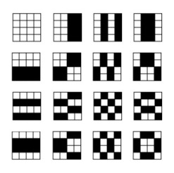
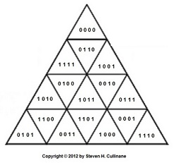

| Finite
Geometry
Notes
|
Finite Relativity: The Triangular Version
(Continued from 1986)
|
S. H. Cullinane This is the relativity problem: to fix objectively a class of equivalent coordinatizations and to ascertain the group of transformations S mediating between them. —
H. Weyl, The Classical Groups , In finite geometry "points" are often defined as ordered n-tuples of a finite (i.e., Galois) field GF(q). What geometric structures ("frames of reference," in Weyl's terms) are coordinatized by such n-tuples? Weyl's use of "objectively" seems to mean that such structures should have certain objective— i.e., purely geometric— properties invariant under each S. This note suggests such a frame of reference for the affine 4-space over GF(2), and a class of 322,560 equivalent coordinatizations of the frame. The frame: A 4×4 array. The invariant structure: The following set of 15 partitions of the frame into two 8-sets.  A representative coordinatization:
0000
0001 0010 0011
The group: The group AGL(4,2) of 322,560 regular affine transformations of the ordered 4-tuples over GF(2). |
S. H. Cullinane This is the relativity problem: to fix objectively a class of equivalent coordinatizations and to ascertain the group of transformations S mediating between them. —
H. Weyl, The Classical Groups , In finite geometry "points" are often defined as ordered n-tuples of a finite (i.e., Galois) field GF(q). What geometric structures ("frames of reference," in Weyl's terms) are coordinatized by such n-tuples? Weyl's use of "objectively" seems to mean that such structures should have certain objective— i.e., purely geometric— properties invariant under each S. This note suggests such a frame of reference for the affine 4-space over GF(2), and a class of 322,560 equivalent coordinatizations of the frame. The frame: An array of 16 congruent equilateral subtriangles that make up a larger equilateral triangle. The invariant structure: The following set of 15 partitions of the frame into two 8-sets.
 The group: The group AGL(4,2) of 322,560 regular affine transformations of the ordered 4-tuples over GF(2). |
For
some background on the triangular version,
see the Square-Triangle Theorem,
noting particularly the linked-to coordinatization picture.
{kind=link}